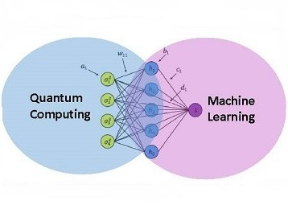
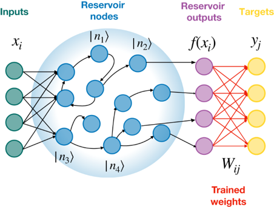
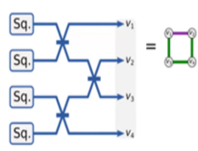
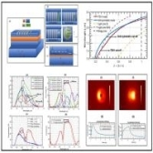
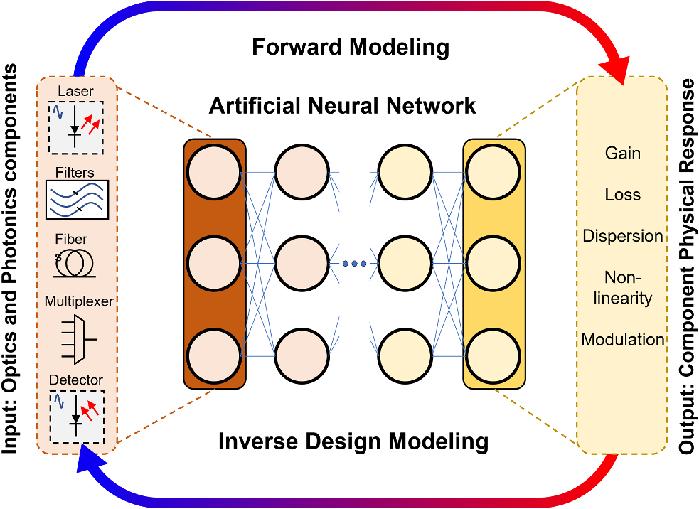
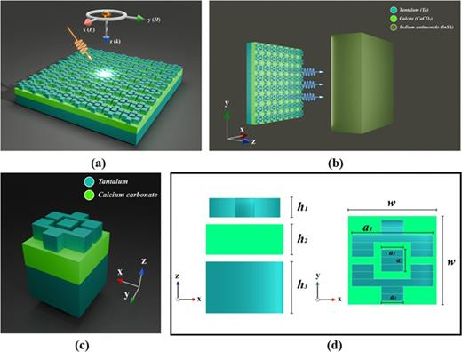
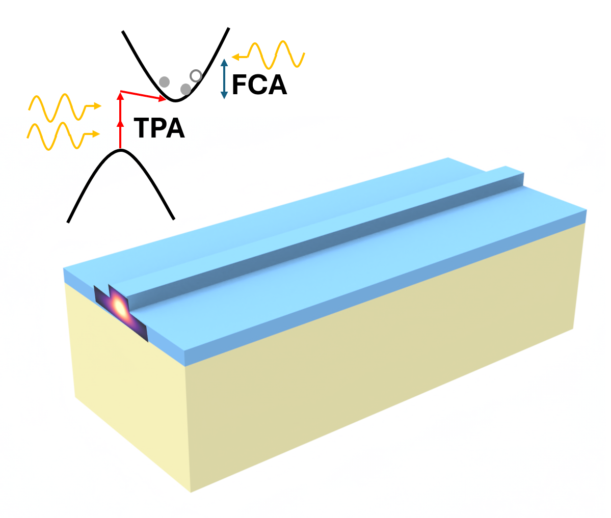
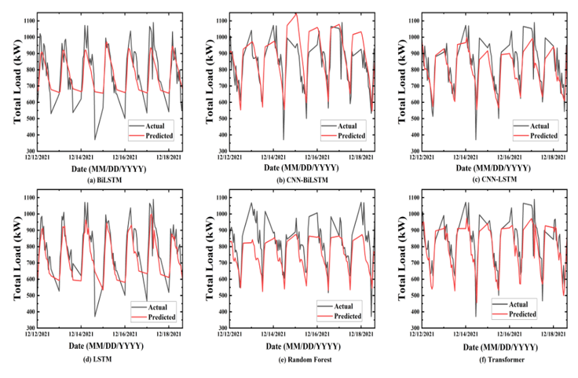

Current and Past Research Directions
Research in Detail

Quantum Machine Learning
QML on a Superconducting Platform
Quantum Reservoir Computing on Google Willow. Part of Master's Thesis.

Quantum Machine Learning
QML on Photonics platforms
Showing quantum advantage for generative problems in Xanadu's CVQC photonics platform, and Quantum Reservoir Computing on Quandela's photonic quantum processor. Part of Master's Thesis.

Computational Photonic Modeling
Photonic Memory
Design of all-optical memory cells based on phase-change materials (GSST) on plasmonics and photonic crystal platforms for Photonic Neuromorphic Computing. Undergraduate Thesis.

Computational Photonic Modeling
Inverse Design of Photonic Memory
Deep Learning based Inverse Design of an All-Optical Phase Change Memory. Derivative work from Undergraduate thesis.

Computational Photonic Modeling
TPV Emitter
Metamaterial Perfect Absorber-based Thermal Emitter for InSb thermo-photovoltaic (TPV) cell, and investigations of Near-Field Effect between the designed thermal emitter and a TPV cell. Collaboration with Prof. Mahdy Rahman Chowdhury at North South University (NSU). Work was published as an Editor's Pick.

Computational Photonic Modeling
NL Phenomenna in Silicon Waveguides
Modeling laser ablation, two-photon absorption, and electrical field enhancement in silicon ridge waveguides and Micro-Ring Resonators, when excited with femtosecond lasers. Collaboration with Prof. Ying Tsui at University of Alberta.

Forecasting
Electrical Load Forecasting
Gaussian Interpolation on a highly sparse electrical load time series real-world dataset (collected from the BUET power plant), and forecasting on the said highly sparse dataset after interpolation. Research spun from Power Systems Project at BUET. Supervision by Prof. Hafiz Imtiaz and Prof. Shaikh Anowarul Fattah from BUET.